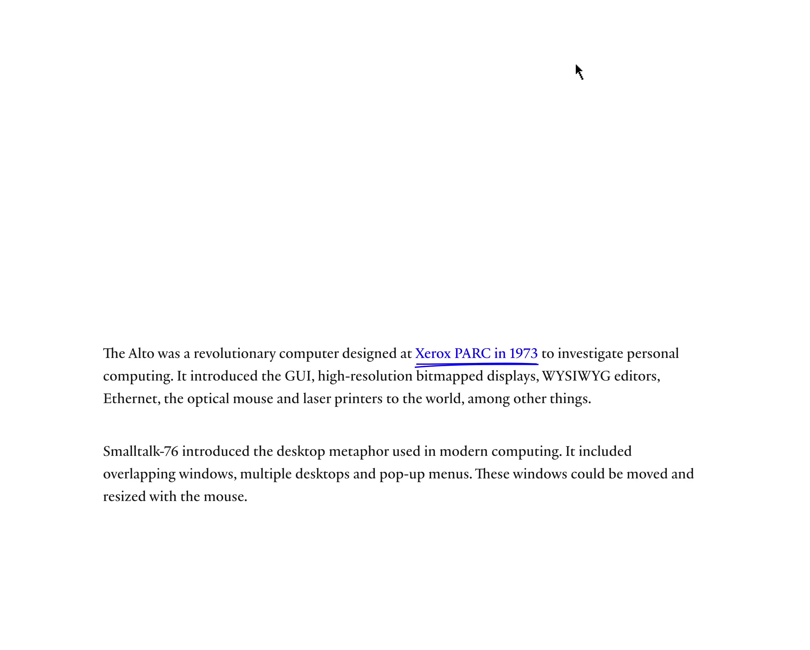
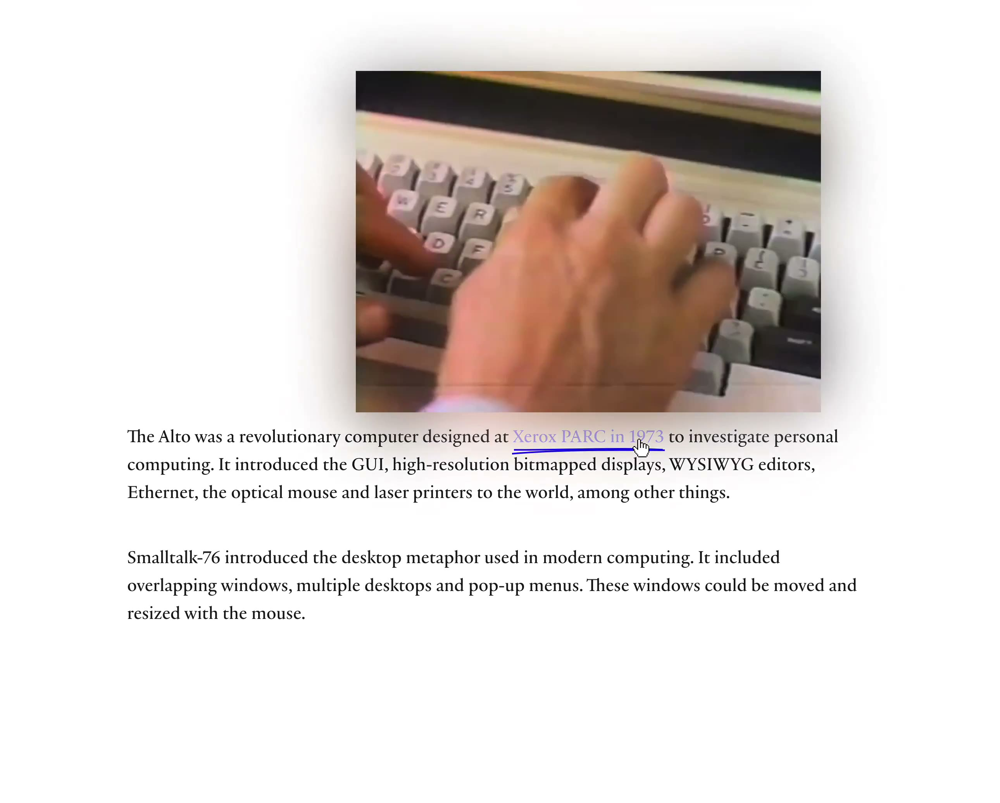
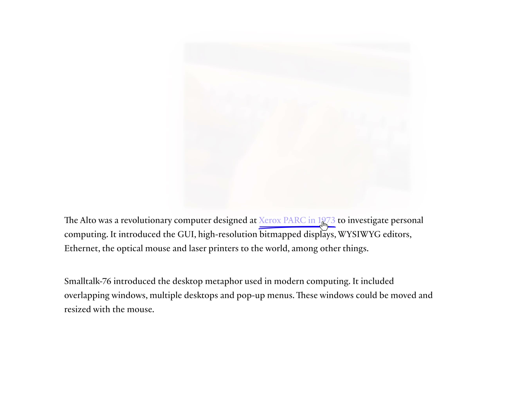

蓝双下划线。片子贴在段上。四周渗光。
The shop still runs a . The cylinder is heavy and the rail is oiled. Each sheet has to be walked through by hand. You hear the roller before you see the type.
Galley trays sit to the left, sorted by size. The first pull is always too light. The second is the one you keep.
白纸。两段衬线字停在偏下的位置，上面一大块空着。一句蓝字，底下两道略弯的线。指针停在这句上，片子在段的上方淡入，四周渗出一层跟画面同色的光。移开，片子淡出。正文不动。
原帖 10.25s、2580×2072、60fps。Rauno 写 Video player with soul，片子是 Xerox Alto 的档案。档案有版权，本页换成工房里的打样机。发明是那句蓝线：它就是播放器。

下划线是播放器。停在蓝字上，或停在已经出现的片子上，#clip-slot 用 220ms 淡入。移出这两块，同样时长淡出。片子循环，静音。正文位置不变，上面那块白是留给它的。
渗光是同一段片子放大、模糊、垫在后面。颜色跟着画面走，不用另调一盒阴影。


| 项目 | 取值 |
|---|---|
| 原件 | 10.25s，2580×2072，60fps。淡入约 150–200ms |
| 栏宽 | 640px。字 18.5px / 1.55。墨 #282828 |
| 蓝字 | #2a24d0。两道线，略弯，高 9px |
| 片子 | 栏宽的 84%，3:2。贴在段上 18px |
| 淡入 | 220ms cubic-bezier(0.23, 1, 0.32, 1)。只动透明度 |
| 渗光 | 同一片子，放大 118%，模糊 36px，透明度 .52 |
#mark#clip#bloom